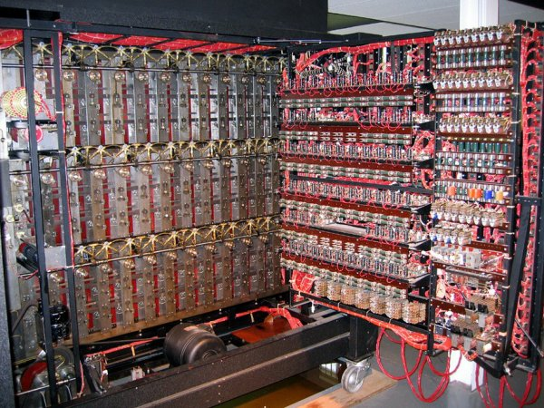
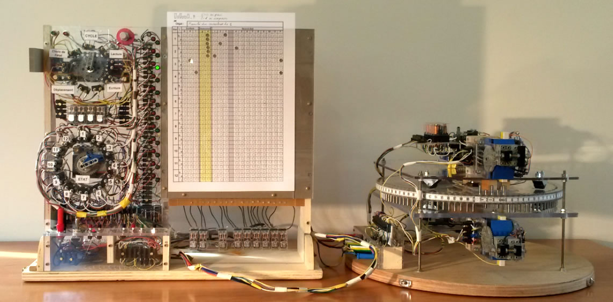
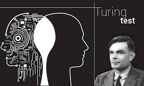

l
l
Alan Mathison Turing, né le 23 juin 1912 à Londres et mort à l'age de 41 ans, le 7 juin 1954 à Wilmslow,
c'est un mathématicien et cryptologue britannique, auteur de travaux qui fondent scientifiquement l'informatique.
Pour résoudre le problème fondamental de la décidabilité en arithmétique, il crée et présente la machine de Turing et des concept de programme en 1936,
qui prendront tout leur sens avec la diffusion des ordinateurs, dans la seconde moitié du xxe siècle.
Durant la Seconde Guerre mondiale, il joue un rôle majeur dans la cryptanalyse de la machine Enigma utilisée par les armées allemandes.
Ce travail secret ne sera connu du public que dans les années 1970. Après la guerre,
il travaille sur un des tout premiers ordinateurs, puis contribue au débat sur la possibilité de l'intelligence artificielle,
en proposant le test de Turing.
Poursuivi en justice en 1952 pour homosexualité, il choisit, pour éviter la prison, la castration chimique par prise d'œstrogènes.
Il est retrouvé mort par empoisonnement au cyanure le 8 juin 1954 dans la chambre de sa maison à Wilmslow.
La reine Élisabeth II le reconnaît comme héros de guerre et le gracie à titre posthume en 2013.
l

l
Enigma est une machine électromécanique portable servant au chiffrement et au déchiffrement de l'information.
Elle fut inventée par l'Allemand Arthur Scherbius. Enigma fut utilisée principalement par les Allemands pendant la Seconde Guerre mondiale.
Le terme Enigma désigne en fait toute une famille de machines, car il en a existé de nombreuses et subtiles variantes,
commercialisées en Europe et dans le reste du monde à partir de 1923.
Elle fut aussi adoptée par les services militaires et diplomatiques de nombreuses nations.
Son utilisation la plus célèbre fut celle faite par l'Allemagne nazie et ses alliés, avant et pendant la Seconde Guerre mondiale,
la machine étant réputée inviolable selon ses concepteurs.
Néanmoins un nombre important de messages Enigma ont pu être décryptés près de sept ans avant la guerre.
l

l
À partir de septembre 1938, Alan Turing travaille à temps partiel pour la Government Code and Cypher School.
Avec le concours d'un expert en cassage de codes, Dilly Knox, il se concentre sur la cryptanalyse d'Enigma.
Le décryptage de messages chiffrés par la machine à coder allemande Enigma, fut un facteur des succès alliés pendant la Seconde Guerre mondiale.
Il a été estimé que le conflit en Europe a été écourté d'au minimum deux ans grâce à la cryptanalyse des chiffres et des codes allemands.
Les premières versions commerciales d'Enigma remontent au début des années 1920. Le cryptage de la machine apparaît alors comme très sûr,
impossible à casser. Dès 1926, plusieurs pays tentent de percer les mystères d'Enigma. Mais les mathématiciens américains, britanniques et français échouent.
Pendant ce temps, la marine allemande met en place des versions modifiées d'Enigma pour chiffrer ses transmissions.
l

l
En informatique théorique, une machine de Turing est un modèle abstrait du fonctionnement des appareils mécaniques de calcul, tel un ordinateur.
Ce modèle a été imaginé par Alan Turing en 1936, en vue de donner une définition précise au concept d’algorithme ou de « procédure mécanique ».
Il est toujours largement utilisé en informatique théorique, en particulier dans les domaines de la complexité algorithmique et de la calculabilité.
l

l
Le test de Turing est une proposition de test d’intelligence artificielle fondée sur la faculté d'une machine à imiter la conversation humaine.
Décrit par Alan Turing en 1950 dans sa publication Computing Machinery and Intelligence,
ce test consiste à mettre un humain en confrontation verbale à l’aveugle avec un ordinateur et un autre humain.
Si la personne qui engage les conversations n’est pas capable de dire lequel de ses interlocuteurs est un ordinateur,
on peut considérer que le logiciel de l’ordinateur a passé avec succès le test.
Cela sous-entend que l’ordinateur et l’humain essaieront d’avoir une apparence sémantique humaine.
Pour conserver la simplicité et l’universalité du test, la conversation est limitée à des messages textuels entre les protagonistes.
l